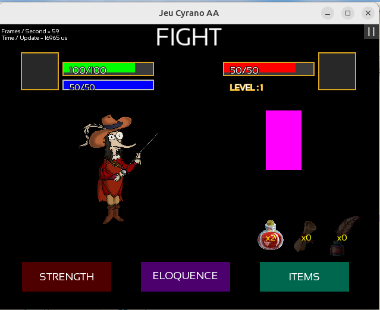
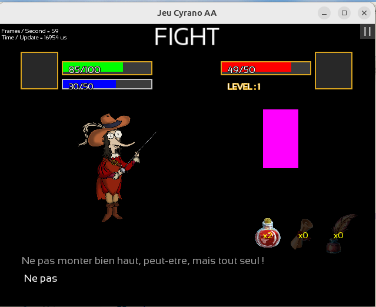
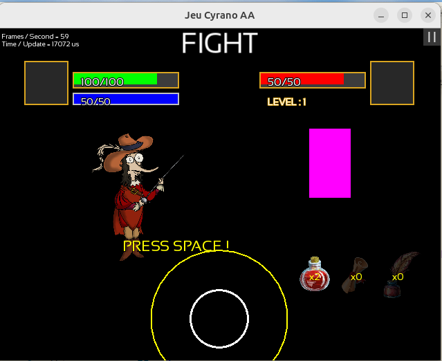
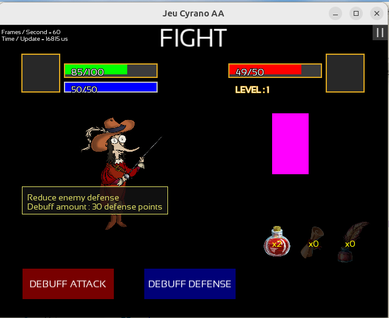

Jeu 2D · C++
CyraNose Jeu de rôle tactique 2D en C++ inspiré de Cyrano de Bergerac
- Période
- juin 2026 · cours CSC4526
- Équipe
- binôme avec Aïcha Koureich
- Outils
- C++17, SFML 3, PugiXML, CMake, GoogleTest
Jeu de rôle tactique inspiré de Cyrano de Bergerac, où le verbe est aussi tranchant que l'acier. Le joueur affronte des adversaires en combinant escrime (Force) et joutes verbales (Éloquence), tout en gérant sa jauge d'inspiration et en achetant des objets dans une boutique. Après chaque victoire, son nez s'allonge un peu plus.
Ma contribution
- Interface de combat : barres de vie et de mana, encadrés, niveau de l'ennemi, placement des entités, info-bulles des affaiblissements et des boutons d'éloquence
- Éloquence : tirades chargées depuis un fichier XML pour en ajouter facilement, et annulation d'une action avant de lancer l'épreuve
- Équilibrage, nouveaux ennemis, règles des objets (un seul par tour, pas de bonus cumulables)
- Tests unitaires GoogleTest sur les objets, les attaques et le joueur, et fusions des branches Git du projet
Réalisé par Aïcha Koureich
- Boutique et sprites des objets, page de pause, corrections de bugs, diagramme de classes



